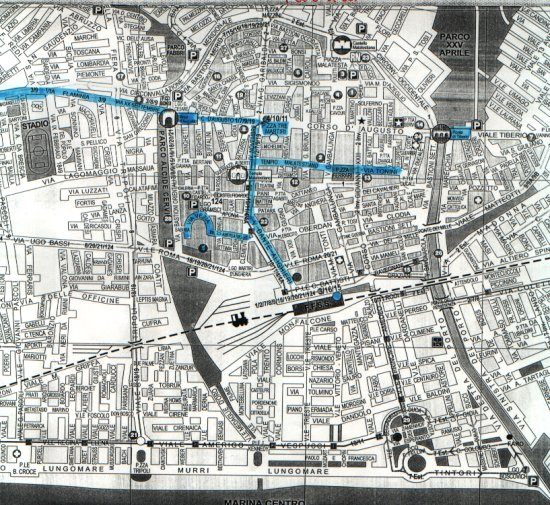

IL PERCORSO NELLA CITTA' DI RIMINI
dalla stazione ferroviaria al Museo Civico attraverso: via Dante,via 4Novembre, Tempio Malatestiano,Piazza Ferrarie via Tonini.
Dal Museo Civico all'Anfiteatro attraverso : via Tonini, Piazza Ferrari, via Tempio Malatestiano,via Clementini, via Aponia, via Vezia.
Dall'Anfiteatro al mare attraverso: Parco Alcide Cervi, Viale Medaglie D'Oro e Viale Amerigo Vespucci.
Pranzo nei pressi del bus-stop numero 27, al ristorante "ROXY BAR" in filobus.
Dal ristorante al centro storico, di nuovo in filobus.
Dall' Arco D'Augusto al Ponte di Tiberio, attraverso Corso d'Augusto.
Dal Ponte di Tiberio, alla stazione.